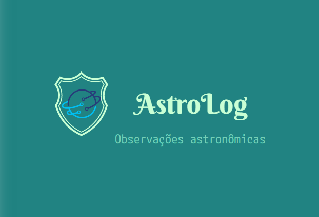

Desbrave o vasto universo, registre cada maravilha celeste. Nosso sistema astronômico abrange estrelas, planetas e além, capturando e explorando observações celestiais de tirar o fôlego.
Para cadastrar observações as manipular, click em LOG